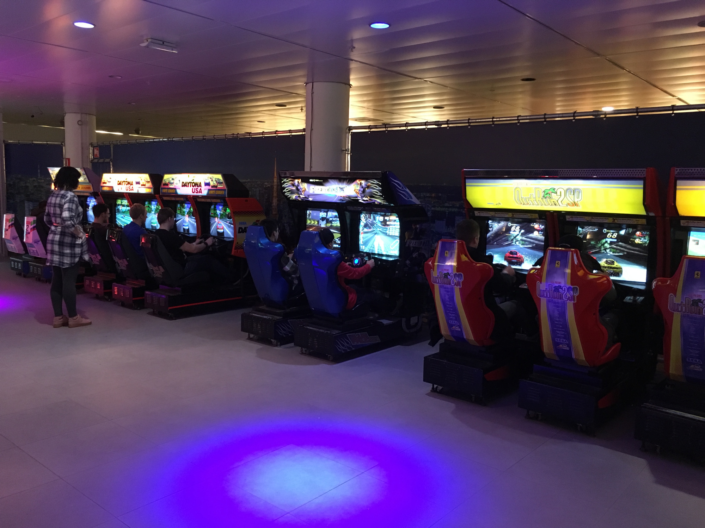
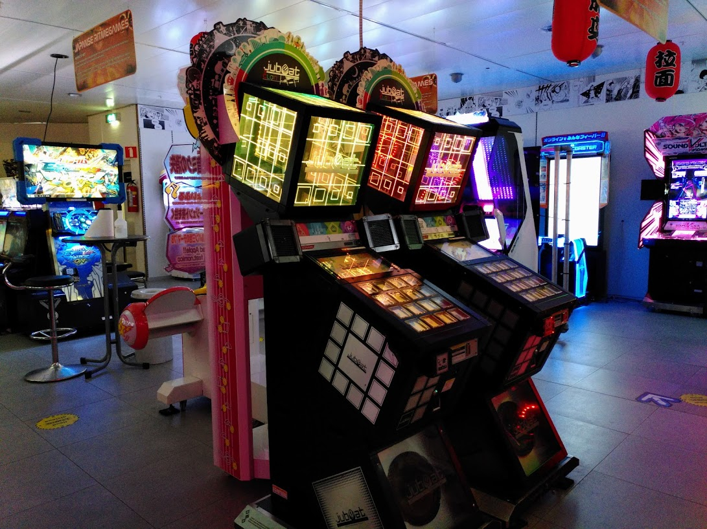
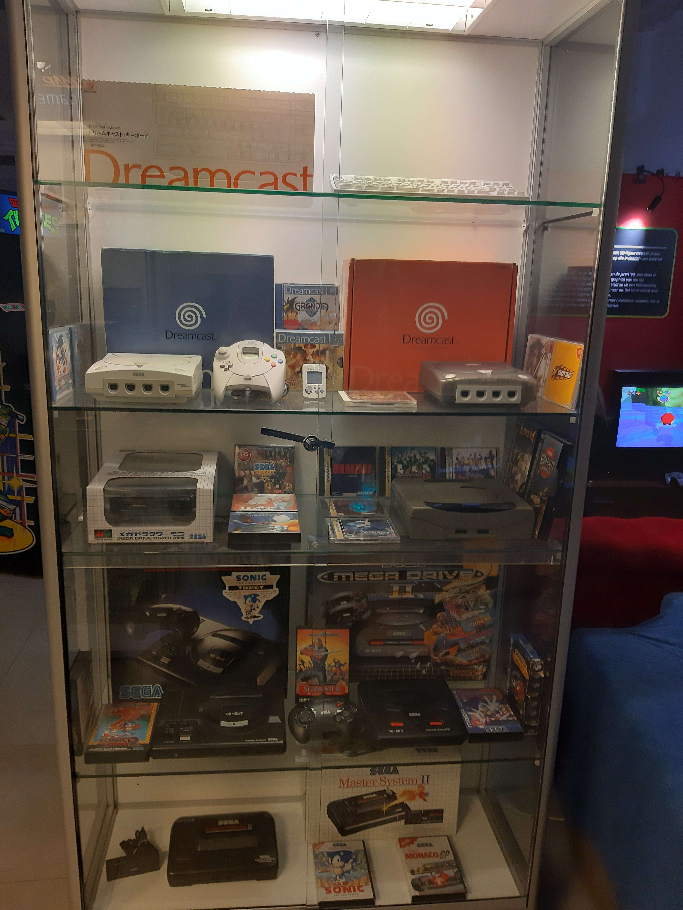
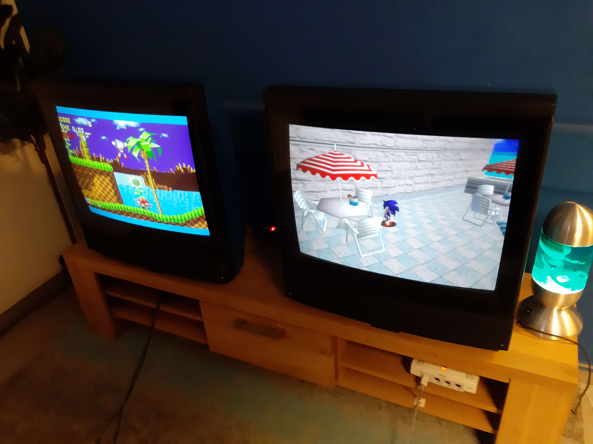
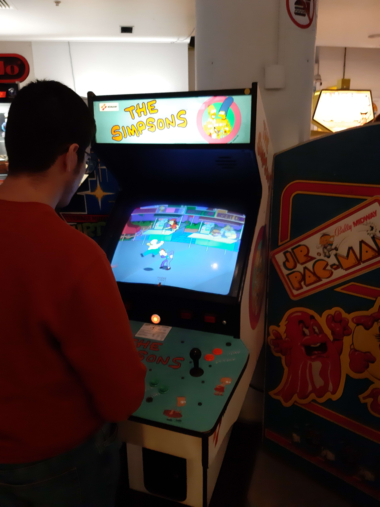
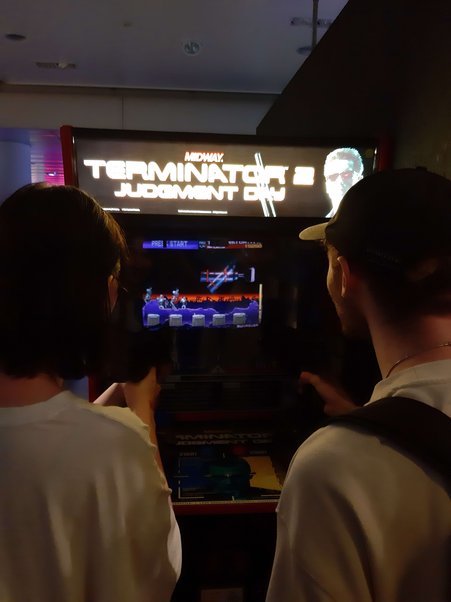
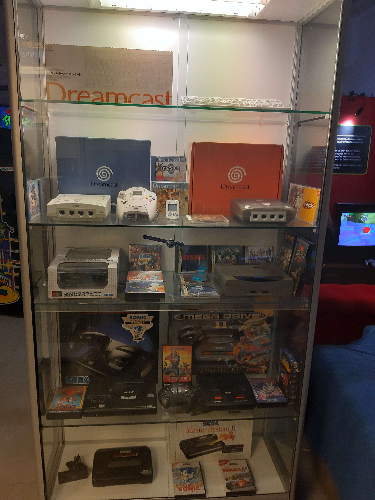
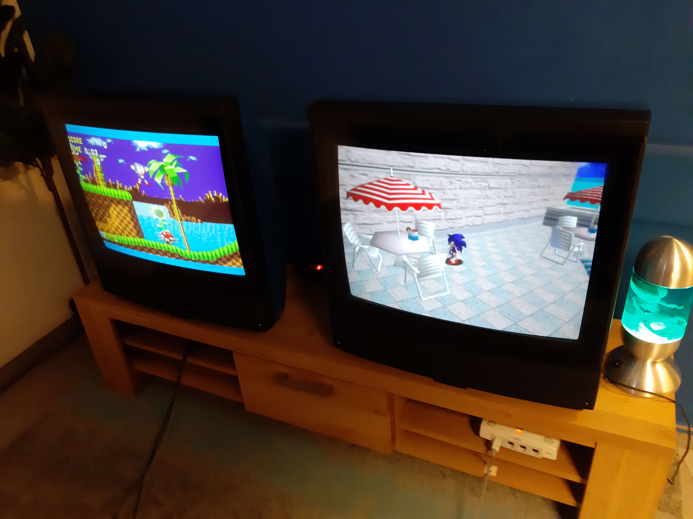
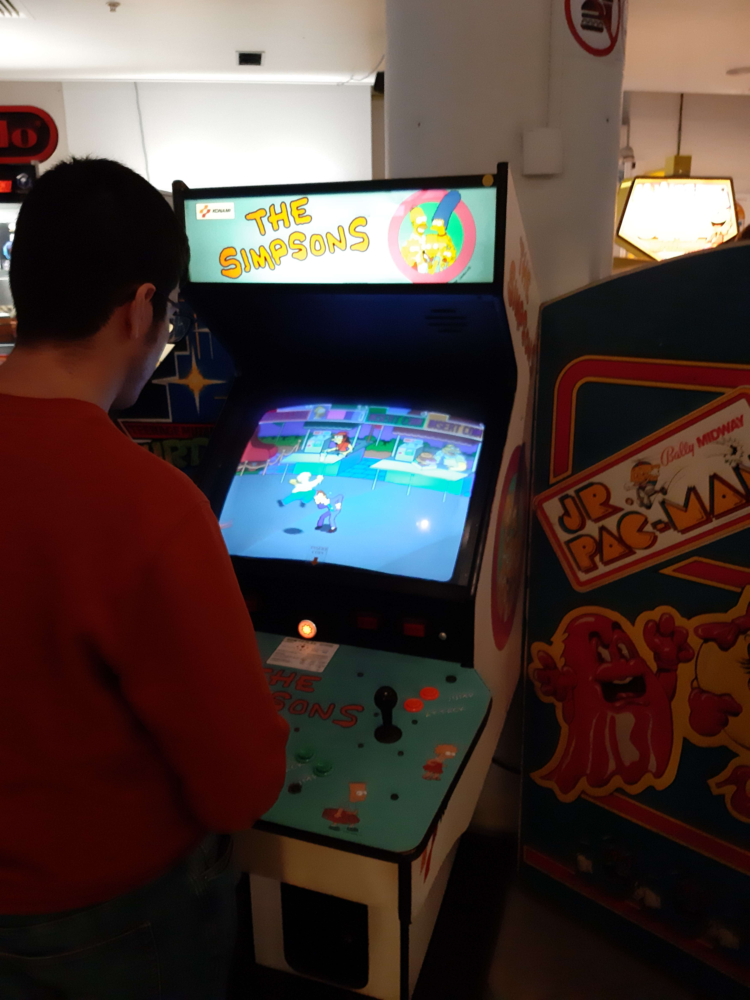
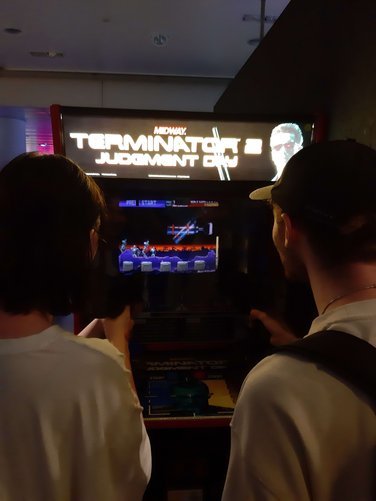

Welkom bij het NVMZ!
Het Nationaal Videogame Museum is een museum in Zoetermeer, Nederland. Het biedt een verscheidenheid aan spellen, variërend van retro-spellen tot moderne arcade-spellen. Hoewel het museum voornamelijk een arcade-ervaring is, gebruikt het hun systemen ook voor educatieve doeleinden. Dit concept was niet het eerste in zijn soort in Nederland; het Bonami Games & Computer Museum in Zwolle en retro speelhal Awesome Space in Utrecht zijn voorlopers van het Nationaal Videogame Museum. Het museum opende in een pand in Zoetermeer waar eerder Vroom & Dreesmann gevestigd was. Het werd in 2017 opgericht door Hasan Tasdemir.
 
 






